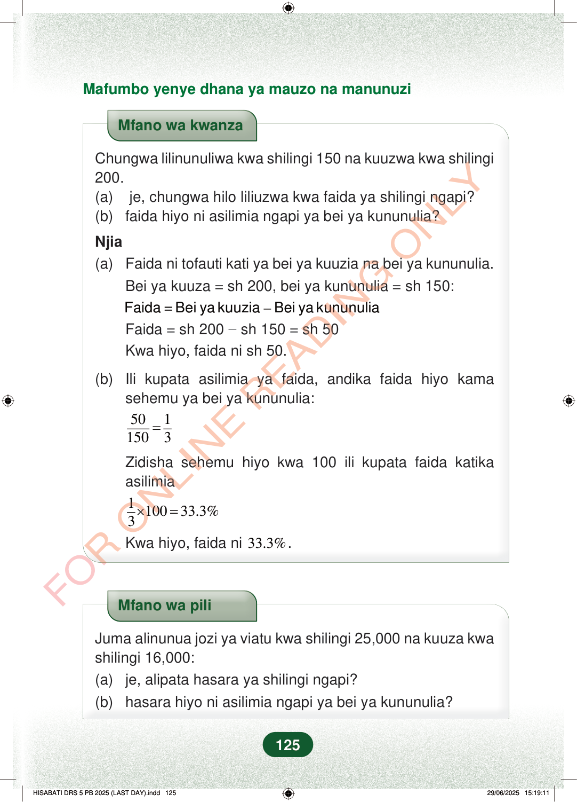

Mafumbo yenye dhana ya mauzo na manunuziMfano wa kwanzaChungwa lilinunuliwa kwa shilingi 150 na kuuzwa kwa shilingi200.(a) je, chungwa hilo liliuzwa kwa faida ya shilingi ngapi?(b)faida hiyo ni asilimia ngapi ya bei ya kununulia?Njia(a)Faida ni tofauti kati ya bei ya kuuzia na bei ya kununulia.Bei ya kuuza=sh 200, bei ya kununulia=sh 150:=–Faida Bei ya kuuzia Bei ya kununuliaFaida=sh 200−sh 150=sh 50Kwa hiyo, faida ni sh 50.(b)Ili kupata asilimia ya faida, andika faida hiyo kamasehemu ya bei ya kununulia:5011503=Zidisha sehemu hiyo kwa 100 ili kupata faida katikaasilimia110033.3%3×=Kwa hiyo, faida ni33.3%.Mfano wa piliJuma alinunua jozi ya viatu kwa shilingi 25,000 na kuuza kwashilingi 16,000:(a)je, alipata hasara ya shilingi ngapi?(b)hasara hiyo ni asilimia ngapi ya bei ya kununulia?125
Mafumbo yenye dhana ya mauzo na manunuzi
Mfano wa kwanza
Chungwa lilinunuliwa kwa shilingi 150 na kuuzwa kwa shilingi 200. (a) je, chungwa hilo liliuzwa kwa faida ya shilingi ngapi? (b) faida hiyo ni asilimia ngapi ya bei ya kununulia?
Njia (a) Faida ni tofauti kati ya bei ya kuuzia na bei ya kununulia. Bei ya kuuza = sh 200, bei ya kununulia = sh 150:
= – Faida Bei ya kuuzia Bei ya kununulia Faida = sh 200 − sh 150 = sh 50 Kwa hiyo, faida ni sh 50.
(b) Ili kupata asilimia ya faida, andika faida hiyo kama
sehemu ya bei ya kununulia:
50 1 150 3 =
Zidisha sehemu hiyo kwa 100 ili kupata faida katika asilimia
1 100 33.3% 3 × =
Kwa hiyo, faida ni 33.3% .
Mfano wa pili
Juma alinunua jozi ya viatu kwa shilingi 25,000 na kuuza kwa shilingi 16,000: (a) je, alipata hasara ya shilingi ngapi? (b) hasara hiyo ni asilimia ngapi ya bei ya kununulia?
125
Mafumbo yenye dhana ya mauzo na manunuziMfano wa kwanza unaonyesha chungwa lililonunuliwa kwa shilingi 150 na kuuzwa kwa shilingi 200. Majibu yanaonyesha faida ya shilingi 50 na asilimia ya faida 33.3%.Mfano wa kwanzaChungwa lilinunuliwa kwa shilingi 150 na kuuzwa kwa shilingi 200.(a) je, chungwa hilo liliuzwa kwa faida ya shilingi ngapi?(b) faida hiyo ni asilimia ngapi ya bei ya kununulia?Njia(a) Faida ni tofauti kati ya bei ya kuuzia na bei ya kununulia.Bei ya kuuza = sh 200, bei ya kununulia = sh 150:<math><mrow><mtext>Faida</mtext><mrow><mspace width="0.2778em"></mspace><mo>=</mo><mspace width="0.2778em"></mspace></mrow><mtext>Bei ya kuuzia</mtext><mrow><mspace width="0.222em"></mspace><mo>−</mo><mspace width="0.222em"></mspace></mrow><mtext>Bei ya kununulia</mtext></mrow></math><math><mrow><mtext>Faida</mtext><mrow><mspace width="0.2778em"></mspace><mo>=</mo><mspace width="0.2778em"></mspace></mrow><mtext>sh </mtext><mn>200</mn><mo>−</mo><mtext>sh </mtext><mn>150</mn><mo>=</mo><mtext>sh </mtext><mn>50</mn></mrow></math>Kwa hiyo, faida ni sh 50.(b) Ili kupata asilimia ya faida, andika faida hiyo kama sehemu ya bei ya kununulia:<math><mrow><mfrac><mn>50</mn><mn>150</mn></mfrac><mo>=</mo><mfrac><mn>1</mn><mn>3</mn></mfrac></mrow></math>Zidisha sehemu hiyo kwa 100 ili kupata faida katika asilimia<math><mrow><mfrac><mn>1</mn><mn>3</mn></mfrac><mo>×</mo><mn>100</mn><mo>=</mo><mn>33.3</mn><mi>%</mi></mrow></math>Kwa hiyo, faida ni 33.3%.Mfano wa pili unauliza kuhusu jozi ya viatu iliyonunuliwa kwa shilingi 25,000 na kuuzwa kwa shilingi 16,000. Unauliza hasara ni shilingi ngapi na asilimia ya hasara ni ngapi.Mfano wa piliJuma alinunua jozi ya viatu kwa shilingi 25,000 na kuuza kwa shilingi 16,000:(a) je, alipata hasara ya shilingi ngapi?(b) hasara hiyo ni asilimia ngapi ya bei ya kununulia?